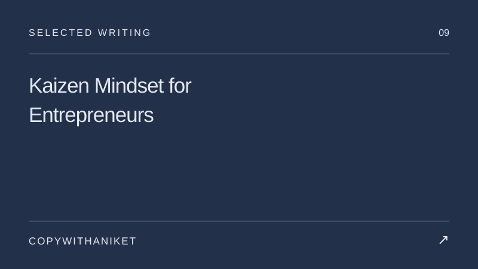
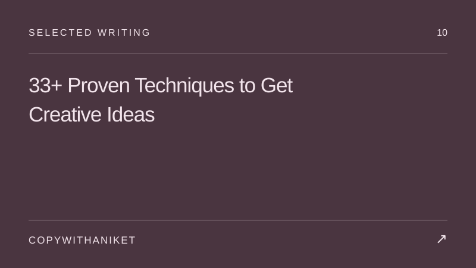
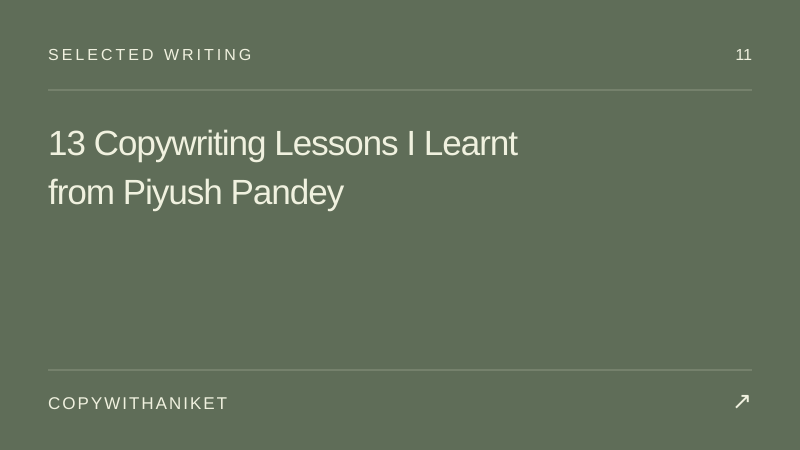
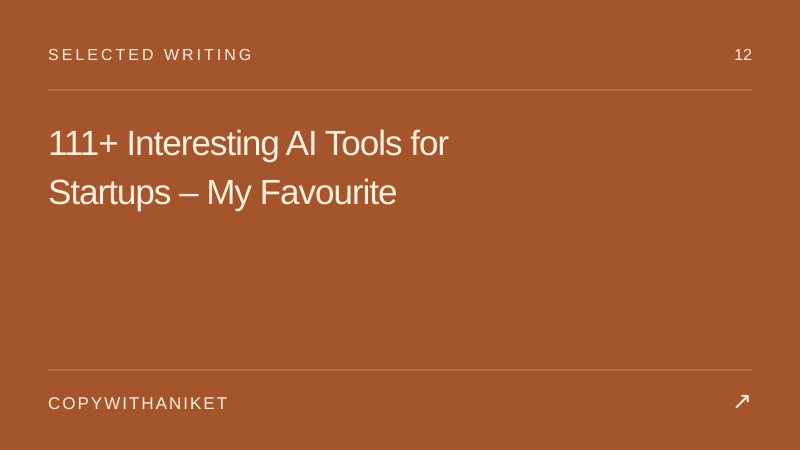

Aniket Chaudhary · Creative Writing
There’s a story behind everything.
Editorial work, writing about creativity, and my own publishing project, ViralStorys.
Novel editing
Deva: A Part of Me
A novel by Apoorva Bhatnagar. My contribution: editing. A different side of the same craft — paying attention to voice, flow, and the story on the page.
See the book on AmazonView on Lulua published novel I edited
I edited Deva: A Part of Me by Apoorva Bhatnagar. I also run ViralStorys.com, where I write about creativity, entrepreneurship, AI tools, and copywriting.
Selected work
Published samples
Published article
Kaizen Mindset for Entrepreneurs
Read the work ↗
Published article
33+ Proven Techniques to Get Creative Ideas
Read the work ↗
Published article
13 Copywriting Lessons I Learnt from Piyush Pandey
Read the work ↗
Published article
111+ Interesting AI Tools for Startups – My Favourite
Read the work ↗ViralStorys
My independent website about creativity, entrepreneurship, marketing, and ideas. It is where I explore the questions that interest me beyond the brief.
Visit ViralStorys.comHave something in mind?